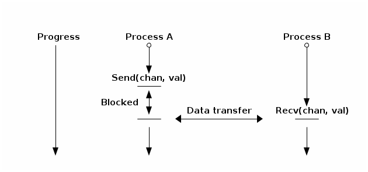

dchan - distributed channel
Table of Contents
- 1. dchan
- 2. Dependencies
- 3. Alternative technologies
- 4. Current situation
- 5. API
- 6. Terminology
- 7. Architecture
- 8. Makefile
- 9. Testing infrastructure
- 10. Development
- 11. Work in progress
- 11.1. Dchan
[6/8]dchan- 11.1.1. DONE Plan9 Research and Proof of Concept
- 11.1.2. DONE Design of API
- 11.1.3. DONE Add travis-ci integration
- 11.1.4. DONE Make possible download the last version of book
- 11.1.5. DONE Publish HTML version of master branch
- 11.1.6. DONE Design of dchan-proxy
- 11.1.7. Dchan-proxy
[0/2]proxy - 11.1.8. Dchan-server
[0/0]server - 11.1.9. TODO Port part of our architecture to use dchan
- 11.1.10. TODO Add some instrumentation to compare against RabbitMQ
- 11.1.11. Generate comparison tables
[0/2]
- 11.1. Dchan
- 12. Bibliography
https://travis-ci.org/NeowayLabs/dchan.svg?branch=master
{kind=link}
1 dchan
Dchan is a server that exposes channels for inter-process communications (IPC) over a file tree interface. These channels are much like Go channels and can be used in the same way but between processes. Instead of implementing a new protocol for data exchange or use a old one like AMQP, Dchan uses a simple file interface. There’s no need of client libraries for each language (every language knows how to read and write from files).
Dchan is able to share those files in the network with the help of the 9P protocol, but it is transparent for clients.
This project uses the concept of Literate Programming of Donald Knuth.
Let us change our traditional attitude to the construction of programs: Instead of imagining that our main task is to instruct a computer what to do, let us concentrate rather on explaining to human beings what we want a computer to do. \cite{Knuth:1984:LiterateProgramming}
This book is the only source for design ideas, code, documentation, tests and project management. From it we build everything.
You can download the book here or read the html version here.
1.1 Why dchan?
Dchan was created as an alternative technology for data processing pipelines. The classic approach to data processing is to write a program that reads in data, transforms it in some desired way, and outputs new data. Such programs, when chained, forms an architecture called “data pipeline”. An obvious example is UNIX pipes, that works very well when all programs share the same address space. For distributed architectures, a more elaborate solution must be used to perform message passing between different machines.
After some time using RabbitMQ, and then studying other solutions, we discovered that majority of current technologies aren’t good enough to solve our specific use cases.
The problem is that, when the worker queue grow indefinitely, because of slow consumers throughput compared to publishers or because some consumers crashed, two things can happen:
- Memory starvation (in case of no persistence)
- Abruptly performance degradation
In a high volume data processing, the difference of throughput between publishers and consumers can lead to lots of terabytes waiting to be processed if not properly handled.
Dchan is an alternative to current brokered solutions but providing ad-hoc synchronization. Dchan helps micro-services to communicate transparently. It’s much like a rendezvous point in your network, where different services met in order to exchange data directly (no need to store messages in-fly). Dchan uses the CSP (Communicating Sequential Processes) style of concurrency to create channels of data, enabling direct inter-process communication without requiring service discovery.
2 Dependencies
To build dchan you’ll need the following dependencies installed:
Tests dependencies (optional):
- plan9port
- Bash >= 4
Book dependencies (optional):
- Latex
- Ditaa
2.1 Archlinux
On archlinux the following command installs almost everything needed:
sudo pacman -Syy emacs24 make go \ # software dependencies plan9port bash \ # test dependencies texlive-most ditaa # book dependencies
To install orgmk jump to Orgmk section.
After that, if you want execute dchan tests, you need configure your PATH and GOPATH environment variables.
PLAN9=<path-to-plan9port> # commonly /opt/plan9 export PATH=$PATH:$PLAN9 $PLAN9
For GOPATH, read the Go Getting Started.
2.2 Orgmk
We don’t use the default orgmk elisp, but a modified version configured for our project. To build orgmk, then use the commands below:
cd <some-place> git clone https://github.com/fniessen/orgmk.git cd orgmk ORGMK_EL=<path-to-dchan>/scripts/orgmk.el make -e sudo make install
The commands above will install orgmk on /usr/local/bin but using the emacs init elisp from dchan directory. If you use orgmk for other projects then you should install orgmk on another place.
2.3 Building
Executing make will build the software, execute tests and build the book (pdf, html and txt). But you can run make build or make test independently.
3 Alternative technologies
Below are some common used technologies for stream processing:
- Broker (message oriented middlewares)
- AMQP
- RabbitMQ
- Qpid
- ActiveMQ
- NATS
- NSQ
- Kafka
- Redis
- AMQP
- Brokerless (message passing libraries)
- ZeroMQ
- Nanomsg
- Akka (actor concurrency model)
- Erlang OTP
The brokered solution could be splited into two classes:
- With database capabilities (persistence, guarantees)
- RabbitMQ
- QPid
- ActiveMQ
- NSQ
- Kafka
- Redis
- In-memory queues
- NATS
Using the brokered solutions listed above means that will exists a message queue between every program that consumes data. This queue is called worker queue and can be in-memory or persistent depending on the solution.
Some brokers with built-in database can be configured to work as in-memory queues too (RabbitMQ, Qpid, NSQ, Redis), but in this case, to avoid memory starvation, it should use some kind of watermark configuration, to activate persistence, or drop new messages, when the memory is over the threshold (See here, here, here and here).
The entire application being down because of OOM in the broker isn’t a good option for data processing, then NATS doesn’t satisfies the basic requirement. NATS has a simple and good architecture but unusable for data processing because it turns the problem even worst, by automatically disconnecting slow consumers freeing their queues.
The persistence option saves the broker of OOM, but the performance degradation turns the problem even worst for consumers, because now every delivery will hit the disk. For continuous data processing, this means that when the broker hit the watermark, it will never restore the performance of in-memory queues again and database will grow infinitely. In this case, a proper database is desirable instead of a message queue.
Kafka is a distributed commit log service with strong guarantees that can be used as message broker. To avoid memory starvation kafka could be configured to flush data to disk at some time interval (log.flush.interval.ms) or flush when a specific amount of messages exists in memory (log.flush.interval.messages). The last config is much like watermark’s configurations, but the difference is that it represents the amount of messages, not a size in memory. Kafka uses the configuration log.retention.hours to determine the amount of time to retain data on disk. The problem of slow consumers could be solved slowing down the producers with quota’s settings (quota.publisher.default) being configured by some worker manager.
Kafka apparently is the broker most prepared for high volume continuous data processing pipeline, but this have the cost of configurability and tuning.
The feature that is lacking in all brokers is fixed-size queues with synchronization between publishers and consumers.
Fixed size queues will avoid memory starvation and with synchronism the publishers will wait until the consumers are ready to get data. The performance of a data pipeline is best measured by the performance of the last services of the chaining, because they’re generating the useful, ready-to-be-used, enriched data. If no bottleneck exists in the architecture, with synchronized services what we’ll achieve is the same performance throughput across the entire pipeline (the performance of the slowest service).
Using the brokerless alternatives cited before we can implement the required synchronism and avoid infinite queues, but this requires additional service discovery capabilities to every micro-service of the architecture.
4 Current situation
Today we use RabbitMQ service for message passing inter-teams and at several places of architecture and apart from the broker problems explained in the last chapter, it proved to be hard to achieve high quality code.
AMQP (Advanced Message Queue Protocol) is a complex bad designed specification protocol and because of that, client libraries are huge and sometimes buggy. On top of a huge library, the specification still imposes a lot of client code to achieve durability and reliability. That big amount of code (and tests) needs to be written in the correct manner and must be correctly tested. Testing is hard because the need for a central complete broker (not easy to mock with libraries) and some way to start/stop the broker for test re-connection and guarantees (durability). In simple words: hard to achieve good quality code.
For more information about this kind of problems, read the article below from one of the AMQP creators:
http://www.imatix.com/articles:whats-wrong-with-amqp/
Other problem is that AMQP specification does not say any words about synchronism between publishers and consumers of queues, and the broker is designed to be a complete database to store the difference between throughput of clients. Sometimes this is a desired behavior, but sometimes it is not. If you have a low traffic messaging, it works, but using the message broker as a database for a large dataset processing requires more database capabilities in the broker than messaging (and AMQP is a messaging protocol).
5 API
5.0.1 Desired goals
Dchan have the goals below:
- It must have a simple API;
- It must support text messages over the wire;
- It must support composability or inter-dchan communications;
- It must support unicast and multicast;
- It must be easy for testing;
- It must scale;
To achieve the first goal dchan uses a file tree interface over network. Simple files (real disk files) aren’t suitable for IPC because of the global nature of the disk incurring races in concurrent access between processes. But UNIX operating systems supports the idea of virtual file systems (VFS), an abstraction layer on top of a more concrete file system, to make possible client application’s interact with different kind of concrete file systems in a uniform way. In practical, VFS is a kernel interface (or contract) to file system drivers.
On linux, every file system driver implements the VFS contract, and then it’s possible to every program that read and write on files to use any file system without code changes. It’s good because old tools like cat, sed, tail, and so on, can be used for network file systems without changes. The VFS is useful to build stackable (or union fs mounts) file systems and this will be explained in the Composability section.
Network file systems are a class of file systems that (commonly) map userspace IO operations into remote procedure calls, turning possible interact with remote resources as if it were local. NFS (Network File System) and 9P works this way, the former being a very complex protocol commonly used with kernel drivers on client and server side, but the latter being very simple, allowing userspace file servers. For 9P exists tons of libraries for various programming languages to develop clients and servers. For NFS exists only one server side implementation in userspace and no library for creating new file servers.
Dchan uses the 9P as network file system protocol behind the scenes. This mean that you can mount the dchan file-tree locally and interact with channels as if it were simple files in the mounted directory.
Linux kernel have native support in the kernel to create 9P clients (not servers), making easy to mount dchan file trees in each linux box.
For more information on 9P implementation see the link below:
5.0.2 CSP Communication Semantics
Dchan uses the Communicating Sequential Processing semantics on top of the virtual file interface. At core of the CSP semantics are two fundamental ideas:
- Atomic communication
- Non-deterministic choice.
It’s the same concepts as independently defined by Robin Milner in the Calculus of Communicating Systems (CCS)1.
5.0.3 Atomic communication
Atomic communication is obtained by rendezvous points. Rendezvous points are places in time and space, where processes who are trying to communicate, meet each other in order to occur the communication. During rendezvous both the sender and receiver processes block until the other side is ready to communicate and implies that the sending and receiving of a message occurs simultaneously.
A real world analogy to rendezvous can be found in telephone communications (without answering machines). Both the caller and callee must be simultaneously present for a phone conversation to occur. Neil Smith at CSP Domain
The image below shows the communication between Process A and B. At some moment in time Process A blocks in the Send call because of Process B isn’t ready to communicate. When Process B calls Recv, the communication happens, data is transferred from Process A to B and Process A finally unblock and continue execution.

Depending on the CSP implementation, channels can be buffered, in other words, in this way it’s a queue with limited size. But independently of channel type, the following is true:
Senders will block when channel is full and receivers will block when channel is empty. The communication is atomic only when the channel is unbuffered.
Then, when the channel is unbuffered, senders will always block waiting for a receivers and receivers will always block waiting for a sender.
5.0.4 Non-deterministic choice
Non-deterministic choice provides processes with the ability to randomly select between a set of possible atomic communications. In the Go programming language the construct for this is called “select"2, other languages call it “alt”. Select statements choose which of a set of possible send or receive operations will proceed and is very useful when dealing with more than 1 channel per process.
5.0.5 Dchan CSP semantics
Dchan supports atomic communications and it is guaranteed to be atomic across the network with the help of the 9P file abstraction.
Non-deterministic choice, in the other hand, is a much more complex task to implement in distributed way and escapes from the file semantics. The problem arises from the fact that it requires a special API to “mark” a set of channels to participate in the “select”, but the most closest file’s syscall to achieve this transparently are select/poll/epoll, but they doesn’t map to any 9P message in the protocol. Dchan doesn’t support “select”, but apart from being complex to implement and requiring an API, it could be implemented in the future.
5.0.6 Client interface
To mount a new dchan file server is required only few commands. On a stock linux kernel, what you need to type is:
mkdir -p /n/dchan
mount -t 9p -o port=6666,dfltuid=`id -u`,dfltgid=`id -g` \
192.168.10.56 /n/dchan <ip-of-dchan-server> /n/dchan
The mount command above will use the linux kernel to establish a new client connection to the file server. Once established, the kernel will present the remote file system in the /n/dchan directory. After that you can use traditional unix tools (file, cat, sed, etc) to interact with the files on it.
5.0.7 Trade-offs
Using a file interface have several benefits, but some problems too.
- Error handling: The network is a lot more unreliable than local disk and this can be a source of problems if programmers do not understand this correctly. The majority of software does not handle disk failures and does not try to remount the file system if the hardware enter in a failure state, but when using network, failures happens all the time and programs needs to be aware of that.
- Framing: Each software in the conversation needs to agree in what is their understanding of a message. If no convention is used between all of the softwares, then some kind of framing protocol must be used to ensure only complete messages are interpreted. The problem arises from two facts: First, each software can use whatever value it want in the amount of bytes of the read and write syscalls, leading to some programs processing incomplete messages if the amount of bytes disagree. Second, sending bytes over the network link isn’t an atomic operation, and for that reason, send/write syscalls for socket commonly returns the amount of bytes completely sent. If the other end cannot identify that the packets received aren’t a complete message then it can process corrupt or incomplete data.
Solutions to the problems above are proposed in the section Implementation.
5.0.8 Messaging
Using a file interface messaging is simpler:
| syscall | dchan semantics / effect |
|---|---|
| open | Open an existing channel |
| open(OCREAT) | Create a new channel |
| read | Read messages from channel |
| write | Write a message into channel |
| stat | Get info of channel |
| close | Close the channel |
| unlink | Remove an existing channel |
5.0.9 Text messages
Dchan has the principle of being simple and easy to debug. To the latter be possible, is strongly encouraged the use of text-based messages instead of binary or compacted text. We’ll not optimize it for performance until we really reach that point.
Using a text message format we can simplify both the clients and server.
- No need for libraries to encode/decode messages;
- Easy to debug in the network;
- Easy to testing;
5.0.10 Ctl
Dchan has only one special served file called ctl to manage channel metrics and settings.
- Metrics
The only metrics exposed until now is:
- rx - Receiver rate in messages/second.
- tx - Transmission rate in messages/second.
- arx - Average rx.
- atx - Average tx.
You can get this statistics reading the ctl file, like below:
$ cd /n/dchan $ cat ctl /core/input 0 25221 25221 25221 25221 /data/input 256 35002 34255 36222 36025
The output format is:
<filename> <channel size> <rx> <tx> <arx> <atx>
The blank separator is TAB.
The metrics are updated each second.
- Settings
For now, there’s only one setting available: channel size.
See below the format to update the channel size for file /data/input:
$ cd /n/dchan $ mkdir data $ touch data/input $ cat ctl /data/input 0 0 0 0 0 $ echo "/data/input 256" >> ctl
The size of channel can be updated at any time, but be aware that during the update of channel the file operations on this specific file will block until finished.
5.0.11 Composability
It’s possible to create a virtual file system representation of multiple dchan file servers. It’s useful for inter-teams communications without the need of using a central dchan server. This feature is given by union file system capabilities of the Operating System.
The Linux and BSD kernels supports various flavours of union file system drivers, but this section will demonstrate the use of the most recent union file system of the Linux Kernel called `overlayfs`.
From Linux documentation:
An overlay filesystem combines two filesystems - an ‘upper’ filesystem and a ‘lower’ filesystem. When a name exists in both filesystems, the object in the ‘upper’ filesystem is visible while the object in the ‘lower’ filesystem is either hidden or, in the case of directories, merged with the ‘upper’ object.
Neil Brown in OverlayFS Documentation.
Using this concept is possible to create file trees composed of multiple dchan servers without the needs of implementing anything on it.
5.0.12 Testing
Developing a distributed software involves lots of testing because failures occurs very frequently. When you build a local software, with the entire business logic running at one local memory address space, we can ignore the majority of operating system and hardware faults and focus only in testing the logic inside the program’s source code. But when software’s logic is spread in the network, several classes of bugs can arises because pieces of the logic are on a remote machine.
On linux, any file system syscall executed on a disconnected mounted 9P file system will result in a -EIO error (Input/Output error). Applications using dchan should verify the return value of read/write functions and, if the value returned is -EIO, then it should re-open the file when a re-connection with the file server is finished. To re-connect, a new mount syscall establishing a new client connection with the file server is required. Linux mount supports the remount option, enabling then to reuse the mount point already used by applications (no need to cwd again to directory). The remount can be done explicitly by the application using dchan or by an external software. This topic will be more detailed in the section dchan-proxy.
6 Terminology
This document uses a number of terms to refer to the roles played by participants in, and objects of, the Dchan communication.
- goroutine: Go lightweight threads that represent anonymous processes in the CSP terminology.
- channel: Entity shared between processes whose purpose is to provide means of communication.
- Rprocess: Reader goroutine of a read 9P request.
- Wprocess: Writer goroutine of a write 9P request.
7 Architecture
Dchan is a file server that exposes the Go channels with a file tree interface. Every new 9P connection established will create a new goroutine for handle the subsequent requests and every created file in the tree will spawn 2 other goroutines (one for read and one for write requests) and create a channel shared between this two goroutines.
The size of channels is 0 (unbuffered) by default and it can be changed using the ctl file.
Every read request will block Rprocess when the channel is empty. And every write request will block the Wprocess when the channel is full. When the channel is unbuffered, the communication is atomic inside Dchan, as stated by CSP concepts explained in the chapter CSP Communication Semantics.
To guarantee the atomicity of the messaging across Dchan clients the messaging algorithm need to be designed in some way that Wprocess only returns to the caller when Rprocess successfully delivered the message to the client consumer.
When channel is unbuffered (with size equals 0), the file server do not store the messages in any way, it only transfer the written data from the Wprocess to Rprocess, that will then deliver the data to the consumer. Dchan is only able to guarantee that data was delivered to some consumer in unbuffered mode.
Dchan exposes only one file for settings and metrics. It is called ctl and remove or change of metadata (wstat) is forbidden on it. The system supports dynamic change of settings by writing to this file. Read the file to get the current settings and metrics. More information about settings and metrics in the Ctl section.
Dchan-proxy is a local unix socket 9P server created to simplify client applications, avoiding other semantics related to network connection in apps trying to communicate. The linux kernel will establish a 9P connection to dchan-proxy for each application, and dchan-proxy will establish a 9P connection over TCP with dchan. Dchan-proxy will proxy 9P requests to dchan server, but it is designed for block the client in the file’s syscalls in case of network failure with dchan. It stores the state of call and re-apply when re-connected. This way, client applications will never know that something bad occurred in the network (except that some syscalls like read blocked for some time).
8 Makefile
First of all, we need a Makefile to build this document and source code.
The most used commands are:
- make to make a full rebuild of everything.
- make tangle to extract source code
- make build to build dchan software
.PHONY: build clean clean-source clean-latex tangle test test-proxy test-dchan # To install `dchan', type `make' and then `make install'. BIN_DIR=/usr/local/bin DCHAN_SRC=$(wildcard unix/dchan/*.org) PROXY_SRC=unix/proxy/proxy.org TEST_SRC=$(wildcard unix/testing/*.org) OBJS= unix/dchan/dchan \ unix/proxy/proxy DOC_BOOK=dchan.org HTMLS=$(patsubst %.org,%.html,$(DOC_BOOK)) TXTS=$(patsubst %.org,%.txt,$(DOC_BOOK)) PDFS=$(patsubst %.org,%.pdf,$(DOC_BOOK)) all: tangle clean tangle test $(HTMLS) $(TXTS) $(PDFS) clean-latex: rm -f *.blg *.bbl *.tex *.odt *.toc *.out *.aux clean-source: -cd unix/dchan/ && make clean -cd unix/proxy/ && make clean clean: clean-latex clean-source rm -f *.pngt rm -f *.txt *.html *.pdf *.odt rm -f *.log %.html: %.org org2html $< %.txt: %.org org2txt $< %.pdf: %.org org2pdf $< -pdflatex dchan.tex bibtex dchan pdflatex dchan.tex pdflatex dchan.tex tangle: org-tangle $(DOC_BOOK) && \ org-tangle $(TEST_SRC) && \ org-tangle $(DCHAN_SRC) && \ org-tangle $(PROXY_SRC) build: tangle cd unix/dchan/ && make build cd unix/proxy/ && make build doc: $(HTMLS) $(PDFS) $(TXTS) test-dchan: tangle cd unix/dchan/ && make test test-proxy: tangle cd unix/proxy/ && make test test: tangle test-dchan test-proxy install: cp $(OBJS) $(BIN_DIR)
9 Testing infrastructure
One of the greatest motivations for create dchan was testing. It’s very hard to test messaging nowadays, because of very complex TCP protocols and bigger responsability on the client side to guarantee reliability of the architecture.
Dchan shall expose a simple testing interface.
We’ll start writing simple tests to verify the contracts established in the API chapter.
The first tests will verify if dchan exposes a sane file-system interface. We shall be able to create, delete (unlink), write, read and stat files.
9.1 Setup and teardown
Every test must mount a dchan directory on startup and unmount when finished.
The easiest way to handle file-system mounts is using shell scripts. The setup function must:
- Create the target dchan directory (eg.: /tmp/dchan)
- Run dchan daemon
- Mount dchan on target directory using a non-privileged user;
- Use FUSE until Linux user namespace isnt stable
If something fail in the steps above, the operating system should be rollback (kill dchan daemon, unmount, delete target dir).
The testing infrastructure should be used as a bash library. Modules must include (or source helper.sh) and invoke the right functions for setup and teardown.
The setup function invokes the 9P daemon using a cmdline passed as third argument and then uses 9pfuse to connect to 9P daemon at second argument (take careful and set this correctly in the cmdline argument) and mount the file system in the directory passed as first argument of the function.
The PID of the invoked daemon is stored in the DAEMONPID global variable. Setup will wait for daemon initialization and FUSE connection before return. The number of seconds to delay is configured by global variable DELAY and you should update the value according to requirements of your daemon if needed. DELAY default value is 2. Setup stores the targetdir argument in the TARGETDIR global variable to used by cleanup TRAP function if the tests are stopped (by typing CTRL-C on console).
# Setup prepares the environment for 9P file system tests. # It receives the target directory, the address to connect to and # 9P daemon command line as parameters. function setup { local targetdir="$1" local addr="$2" local cmdline="$3" local cwd="$(pwd)" TARGETDIR="${targetdir}" cd ../.. # Invokes the daemon eval "${cmdline} &" if [ "$?" != "0" ]; then echo "Failed to start daemon... Exiting ..." teardown "${targetdir}" "" exit 1 fi DAEMONPID=$! # wait for daemon initialization sleep "${DELAY}" mkdir -p "${targetdir}" 9pfuse "${addr}" "${targetdir}" if [ "$?" != "0" ]; then echo "Failed to mount 9P" teardown "${targetdir}" "${DAEMONPID}" exit 1 fi # wait for 9P client-server handshake sleep "${DELAY}" cd "${cwd}" if [ "$?" != "0" ]; then echo "Failed to enter into dchan directory" teardown "${targetdir}" "${DCHANPID}" exit 1 fi echo "###########################" mount | grep "${targetdir}" echo "###########################" if [ "`mount | grep \"${targetdir}\"`" == "" ]; then echo "Not mounted yet. Try again with higher delay time..." teardown "${targetdir}" "${DAEMONPID}" exit 1 fi }
Teardown should undo the changes made in the environment.
- Unmount 9P server;
- Kill 9P file server daemon;
- Remove target directory;
Below is the teardown function:
# teardown(dchandir, dchanpid) # targetdir -> target directory # daemonpid -> pid of 9P file server daemon function teardown { local targetdir="$1" local daemonpid="$2" # first go far away cd / if [ "$targetdir}" != "" ]; then unmount "${targetdir}" rm -rf "${targetdir}" fi if [ "${daemonpid}" != "" ]; then kill "${daemonpid}" fi }
The cleanup function is executed in case of CTRL-C being invoked by user.
# trap ctrl-c and call cleanup() trap cleanup INT function cleanup() { echo "** Trapped CTRL-C" teardown "${TARGETDIR}" "${DAEMONPID}" exit 1 }
Setup and Teardown are provided by unix/testing/helpers.sh bash library.
The setup and teardown functions above are all you should need to test the file tree interface. For example, to test if the file server is mounting a file tree with success, the changedir function below can be used:
function testchangedir { local dir="$1" local cwd="$(pwd)" cd "${dir}" if [ "$?" != "0" ]; then echo "Failed to enter into directory: ${dir}" exit 1 fi }
The complete test file can be something like:
. ./unix/testing/helpers.sh function testchangedir { local dir="$1" local cwd="$(pwd)" cd "${dir}" if [ "$?" != "0" ]; then echo "Failed to enter into directory: ${dir}" exit 1 fi } setup "/tmp/dchan" "tcp!localhost!6666" "dchan -addr :6666 -d" testchangedir "/tmp/dchan" teardown "/tmp/dchan" "${DAEMONPID}"
10 Development
As stated before, Dchan is a literate program, then this document is all you need to understand all of it’s concepts, design choices, and get the source code.
It was developed using orgmode, but isn’t required to use emacs to build or contribute to the project. The project is composed of org files and a full featured Makefile. The Makefile have all of the commands you need to generate the book on various formats, extract the source code, build the software, execute tests, and so on.
If you use Emacs editor, you don’t need this Makefile at all, because orgmode is fully integrated.
For non-emacs developers, the development process is:
- Change org files;
- Run make
Never touch the generated source code.
10.1 Dependencies
- Org dependency
If you use Emacs, everything is already installed.
For non-emacs developers, install orgmk.
- Go
Read the Go Getting started tutorial.
10.2 Implementation
10.2.1 Dchan
- Source Makefile
all: clean tangle build test tangle: org-tangle dchan.org deps: go get -v -t ./... build: tangle deps go build -v test: tangle build chmod +x tests/acceptance/*.sh ./tests/acceptance/vfs.sh clean: rm -f tests/acceptance/*.sh rm -f *.go
- Introduction
Dchan is a 9P file server developed with go9p library. This library resembles the old plan9’s lib9p, but with some simplifications in the API. Behind the good design of lib9p and go9p is where dchan really shines. They provide a server abstraction that simplify dchan implementation. The file server author doesn’t need to worry about the 9P protocol internals working, focusing on the 9P file messages only. Then Dchan logic is most related to CSP than 9P semantics.
For more information about Dchan design see the Architecture section.
- Acceptance testings
Dchan is a 9P file server, then the most basic acceptance tests are related to the exposed file tree interface. It must be consistent and behave as a local disk file system. Traditional unix tools as cat, grep, sed, tee, etc, must work without problems.
Dchan acceptance tests uses the Testing Infrastructure created before.
- Ensures dchan is mountable on UNIX
This tests only ensures dchan is a mountable fs and clients can change the current directory to the mounted one (cd /tmp/dchan).
set -e . ../testing/helpers.sh DAEMONPID="" function startDchan { local cwd="$(pwd)" ./dchan -addr ":6666" -d & BACKENDPID=$! cd "${cwd}" } function changedir { local targetdir="$1" cd "${targetdir}" || echo "ACCEPTANCE TEST ERROR: Unable to cd into mount point" } function readctl { local mntp="$1" local expected="hacked by i4k" local cwd="$(pwd)" cd "${mntp}" local result="$(cat ctl)" if [ "${expected}" != "${result}" ]; then echo "Failed, received: ${result}" fi } # Running backend 9P file server MNTPOINT="/tmp/dchan" setup "${MNTPOINT}" "tcp!localhost!6666" "$(pwd)/dchan -addr 'localhost:6666'" RES="`changedir \"${MNTPOINT}\"`" if [ -n "$RES" ]; then echo "Failed to change dir: $RES" teardown "${MNTPOINT}" "${DAEMONPID}" exit 1 fi RES="`readctl \"${MNTPOINT}\"`" if [ -n "$RES" ]; then echo "Failed read ctl: $RES" teardown "${MNTPOINT}" "${DAEMONPID}" exit 1 fi teardown "${MNTPOINT}" "${DAEMONPID}"
- Ensures dchan is mountable on UNIX
- Dchan
Dchan extends the go9p file server (srv.File) data structure, overriding the required methods for opening, reading, writing, etc, files. The core data structure is File and it can be seen below:
type File struct { srv.File aux Faux }
Faux stores auxiliary data for each file.
type Faux struct { ftype uint8 }
File have methods to handle each file operation. For now, the Read method only have a fixed size string.
func (file *File) Read(fid *srv.FFid, buf []byte, offset uint64) (int, error) { b := []byte("hacked by i4k") n := len(b) if offset >= uint64(n) { return 0, nil } b = b[int(offset):n] n -= int(offset) if len(buf) < n { n = len(buf) } copy(buf[offset:int(offset)+n], b[offset:]) return n, nil }
Write, Stat and Wstat aren’t implemented yet:
func (file *File) Write(fid *srv.FFid, data []byte, offset uint64) (int, error) { return 0, errors.New("permission denied") } func (file *File) Wstat(fid *srv.FFid, dir *p.Dir) error { return nil } func (file *File) Remove(fid *srv.FFid) error { return nil }
type File struct { srv.File aux Faux } type Faux struct { ftype uint8 } func (file *File) Read(fid *srv.FFid, buf []byte, offset uint64) (int, error) { b := []byte("hacked by i4k") n := len(b) if offset >= uint64(n) { return 0, nil } b = b[int(offset):n] n -= int(offset) if len(buf) < n { n = len(buf) } copy(buf[offset:int(offset)+n], b[offset:]) return n, nil } func (file *File) Write(fid *srv.FFid, data []byte, offset uint64) (int, error) { return 0, errors.New("permission denied") } func (file *File) Wstat(fid *srv.FFid, dir *p.Dir) error { return nil } func (file *File) Remove(fid *srv.FFid) error { return nil }
Main is the module responsible to parse the command-line arguments and initialize the 9P file server.
Dchan arguments are listed below:
argument default value description addr :6666 network listen address debug not set Enable debugging Command-line arguments are defined below:
var addr = flag.String("addr", ":6666", "network address") var debug = flag.Bool("d", false, "print debug messages")
The function main initialize a file server (srv.Fsrv and add the ctl file to root of the filesystem (/). The root have permission bits 0777 until we have a good understanding of the way services will communicate. The Dotu attribute of file server indicates that server is (or not) compatible with 9P2000.u specification. The 9P2000.u have some extensions for unix, and it is recommended for unix file servers (our case).
var root *srv.File func main() { var err error var ctl *File var s *srv.Fsrv flag.Parse() user := p.OsUsers.Uid2User(os.Geteuid()) root = new(srv.File) err = root.Add(nil, "/", user, nil, p.DMDIR|0777, nil) if err != nil { goto error } ctl = new(File) err = ctl.Add(root, "ctl", p.OsUsers.Uid2User(os.Geteuid()), nil, 0444, ctl) if err != nil { goto error } s = srv.NewFileSrv(root) s.Dotu = true if *debug { s.Debuglevel = 1 } s.Start(s) err = s.StartNetListener("tcp", *addr) if err != nil { goto error } return error: log.Println(fmt.Sprintf("Error: %s", err)) }
10.3 Test cases
10.3.1 Network partitions
Network partition is the most frequent problem that can affect Dchan. There’s some cases that needs to be covered in order to achieve reliability in the exchange of messages.
10.4 dchan-proxy
10.4.1 Makefile
all: clean tangle build test tangle: org-tangle proxy.org build: tangle go build -v test: tangle build bash ../testing/testcover.sh chmod +x tests/acceptance/*.sh ./tests/acceptance/vfs.sh clean: rm -f tests/acceptance/*.sh rm -f *.go
10.4.2 Proxy acceptance tests
The most important acceptance tests for the proxy server are:
- File system interface;
- Network partitions with dchan server;
Below are the VFS tests:
. ../testing/helpers.sh BACKENDPID="" function start9pserver { local cwd="$(pwd)" go get -v -u github.com/lionkov/go9p cd ${GOPATH}/src/github.com/lionkov/go9p/p/srv/examples/clonefs/ go build -v ./clonefs -addr ":6666" -d & BACKENDPID=$! cd "${cwd}" } function changedir { local targetdir="$1" cd "${targetdir}" if [ "$?" != "0" ]; then echo "Failed to change dir" exit 1 fi } # Running backend 9P file server start9pserver rm -f /tmp/dchan-proxy.sock setup "/tmp/dchan-proxy" "unix!/tmp/dchan-proxy.sock" "$(pwd)/proxy -laddr unix:///tmp/dchan-proxy.sock -raddr 'localhost:6666'" changedir "/tmp/dchan-proxy" teardown "/tmp/dchan-proxy" "${DAEMONPID}" kill ${BACKENDPID}
10.4.3 Proxy implementation
Dchan-proxy is a pure TCP proxy that knows nothing about 9P or dchan internal working. It only bypass local network packets (from unix socket or loopback tcp port) to remote destination server. The difference is that it never fail to clients. If the backend server crash or network link is down, it will not return any bytes to client until it successfully reconnects with backend server.
The Go implementation of the proxy has heavy use of CSP channels to pipe data from one connection to the other, not interested in the content.
The algorithm for this pipe is based on the following ideas:
- For the listener connection lConn, create a channel lChan and a go-routine reading bytes from lConn and writing into lChan.
- For the remote connection rConn, create a channel rChan and a go-routine reading bytes from rConn and writing into rChan.
- The piping process is an infinite loop with a non-deterministic choice (select) operation writing everything read from lChan into rConn and everything read from rChan into lConn.
The first two steps are achieved by chanFromConn function.
ChanFromConn creates a channel c and sends everything it reads from the socket connection conn into c. It makes by creating a new go-routine for reading data on the connection and copying it to destination channel. Data is copied to avoid races with channel’s consumer.
If something bad occurs reading conn, then the channel c is closed to notify the consumer that conn is down, requiring a re-connect.
It returns a receive-only (unidirectional) channel containing data read from connection.
func chanFromConn(conn net.Conn) <-chan []byte { c := make(chan []byte) go func() { b := make([]byte, 1024) for { n, err := conn.Read(b) if n > 0 { res := make([]byte, n) copy(res, b[:n]) c <- res } if err != nil { if err == io.EOF { // connection was closed close(c) } else { c <- nil close(c) } break } } }() return c }
ChanFromConn unit tests can be seen here.
The third step is handled by Pipe function.
Pipe creates a full-duplex pipe between the two sockets lConn and rConn, and transfers data from one to the other (see Non-deterministic choice).
Pipe uses the following convention to simplify the implementation:
If a nil is received on lChan and channel is closed, then this means that client disconnects. If a nil is received on lChan but channel is still active, then some error happened in the connection.
The same for the remote one: If a nil is received on rChan and channel is closed, then this means that remote backend closed the connection. If a nil is received but the channel is still active, then some network error occurred.
func Pipe(lConn net.Conn, rConn net.Conn) (error, error) { lChan := chanFromConn(lConn) rChan := chanFromConn(rConn) for { select { case b1, ok1 := <-lChan: if b1 == nil && ok1 == true { return errors.New("Local connection error"), nil } else if b1 == nil && ok1 == false { // connection succesfully closed return nil, nil } else { rConn.Write(b1) } case b2, ok2 := <-rChan: if b2 == nil && ok2 == true { return nil, errors.New("connection error") } else if b2 == nil && ok2 == false { return nil, nil } else { lConn.Write(b2) } } } panic("unreachable") }
Pipe unit tests can be seen here.
- Main
Dchan-proxy receives only two command-line parameters:
- laddr: URI to listen on
- raddr: URI to TCP remote address
By default it binds to unix socket on file /tmp/dchan-proxy.sock.
var ( laddr *string = flag.String("laddr", "unix:///tmp/dchan-proxy.sock", "local address") raddr *string = flag.String("raddr", "", "remote address") )
The main function only parses the command line arguments and calls core.Start.
package main import ( "os" "fmt" "flag" "github.com/NeowayLabs/dchan/unix/proxy/core" ) var ( laddr *string = flag.String("laddr", "unix:///tmp/dchan-proxy.sock", "local address") raddr *string = flag.String("raddr", "", "remote address") ) func main() { var err error flag.Parse() if *raddr == "" { fmt.Printf("-raddr is required.\n") os.Exit(1) } err = core.Start(*laddr, *raddr) if err != nil { panic(err) } }
- Core package
The core package is responsible for the magic. It starts the socket server and the go-routines to handle the requests.
Start function first discover the type of socket for the local server to use the generic net.Listen function. Then it starts listening on configured local address for incoming connections.
For every new connection, it calls handleProxy in a new go-routine. A new go-routine for each connection is required because 9P is a stateful protocol, this means the network connection will stay established until client disconnects (unmount the file system). We can limit the max number of clients in the future.
func Start(laddr, raddr string) error { var ( nettype, addrval string err error ) if laddr[0:7] == "unix://" { nettype = "unix" addrval = laddr[7:] } else if laddr[0:6] == "tcp://" { nettype = "tcp" addrval = laddr[6:] } else { nettype = "tcp" addrval = laddr } listener, err := net.Listen(nettype, addrval) if err != nil { panic(err) } for { conn, err := listener.Accept() if err != nil { panic(err) } go handleProxy(conn, raddr) } }
HandleProxy establish a new connection with the backend 9P server and starts piping data from remote socket to the local one using the Pipe function. When there’s no more data to read or write to remote destination, handleProxy close both connections.
The Pipe is based on the blog post below:
https://www.stavros.io/posts/proxying-two-connections-go/
It was not possible to use plain io.Copy because we have requirements about network failures.
func handleProxy(conn net.Conn, raddr string) { addr, err := net.ResolveTCPAddr("tcp", raddr) if err != nil { panic(err) } rConn, err := net.DialTCP("tcp", nil, addr) if err != nil { panic(err) } defer func() { rConn.Close() conn.Close() }() Pipe(conn, rConn) }
10.4.4 Core unit tests
Proxy test coverage can be seen here.
- ChanFromConn testcases
To Easy the testing, we’ll create our own net.Conn implementation that only writes and read in a internal buffer.
The MyConn have a mutex to synchronize reads and writes into buffer and a counter integer property to trigger a connection error when 5 (five) or more reads occurs. The newMockCon returns a new fresh connection.
type MyConn struct { buffer []byte *sync.Mutex counter int closed bool } func newMockConn() net.Conn { c := &MyConn{} c.buffer = make([]byte, 0, 1024) c.Mutex = &sync.Mutex{} return c }
Write and Read simply operate on internal byte array buffer. Both functions lock to avoid races.
func (c *MyConn) Write(d []byte) (int, error) { c.Lock() defer c.Unlock() if c.closed { return 0, errors.New("Connection closed") } for _, b := range d { c.buffer = append(c.buffer, b) } return len(d), nil } func (c *MyConn) Read(d []byte) (int, error) { var i int readAgain: c.Lock() if c.closed { return 0, io.EOF } if c.counter >= 5 { c.Unlock() return 0, errors.New("Connection error") } if len(c.buffer) == 0 { c.Unlock() time.Sleep(100 * time.Millisecond) goto readAgain } for i = 0; i < cap(d) && i < len(c.buffer); i++ { d[i] = c.buffer[i] } c.buffer = c.buffer[i:] c.counter += 1 c.Unlock() return i, nil } func (c *MyConn) Close() error { c.Lock() defer c.Unlock() c.buffer = nil c.closed = true return nil } func (c *MyConn) LocalAddr() net.Addr { return nil } func (c *MyConn) RemoteAddr() net.Addr { return nil } func (c *MyConn) SetDeadline(t time.Time) error { return nil } func (c *MyConn) SetReadDeadline(t time.Time) error { return nil } func (c *MyConn) SetWriteDeadline(t time.Time) error { return nil }
ChanFromConn must be tested for the following cases:
- Every data written into the connection must be written into the channel;
- If the Read from the connection fails, the channel must be closed;
For the first case, we can test writing something into the connection and verifying if it was written into the channel.
func TestChanFromConn1(t *testing.T) { conn := newMockConn() chan1 := chanFromConn(conn) conn.Write([]byte("teste")) timeout := time.After(1 * time.Second) select { case d := <-chan1: if string(d) != "teste" { t.Errorf("Expected '%s' != from '%s'.", "teste", string(d)) } case <-timeout: t.Error("No data available in 1 second") } conn.Write([]byte("i4k")) timeout = time.After(1 * time.Second) select { case d := <-chan1: if string(d) != "i4k" { t.Errorf("Expected '%s' != from '%s'.", "i4k", string(d)) } case <-timeout: t.Error("No data available in 1 second") } }
For the second case, we’ll write 5 times into the connection to trigger an error in the Read method of MyConn.
func TestChanfromconn2(t *testing.T) { conn := newMockConn() chan1 := chanFromConn(conn) conn.Write([]byte("you")) <-chan1 conn.Write([]byte("have")) <-chan1 conn.Write([]byte("been")) <-chan1 conn.Write([]byte("hacked")) <-chan1 conn.Write([]byte("!!!")) <-chan1 // The next read will trigger a connection error v, ok := <-chan1 if v == nil && ok == false { t.Errorf("The channel must be open... Returned %v :: %v", string(v), ok) } }
- Pipe testcases
The Pipe function have the following test cases:
- Every byte written on one channel must be written on the other;
- If reading some of the channels receive nil, but the channel is closed, then Pipe must return successfully;
- If reading some of the channels receive nil but channel is active, then must return an error;
func TestPipe1(t *testing.T) { lConn := newMockConn() rConn := newMockConn() go func() { err1, err2 := Pipe(lConn, rConn) if err1 != nil { t.Errorf("Conn1 failed: %s", err1.Error()) } if err2 != nil { t.Errorf("Conn2 failed: %s", err2.Error()) } }() lConn.Write([]byte("teste")) data := make([]byte, 5) n, err := rConn.Read(data) if err != nil { t.Error(err) return } if n != 5 { t.Errorf("Expected 5 bytes, received %d", n) return } if string(data) != "teste" { t.Errorf("Expected '%s' but received '%s'", "teste", string(data)) } }
Closing the local connection must make Pipe return successfully (second case).
func TestPipe2LConn(t *testing.T) { lConn := newMockConn() rConn := newMockConn() done := make(chan bool) go func() { err1, err2 := Pipe(lConn, rConn) if err1 != nil { t.Error("conn1 failed: %s", err1.Error()) } if err2 != nil { t.Error("conn2 failed: %s", err2.Error()) } done <- true }() lConn.Close() <-done }
Closing the remote connection must make Pipe return successfully (second case).
func TestPipe2RConn(t *testing.T) { lConn := newMockConn() rConn := newMockConn() done := make(chan bool) go func() { err1, err2 := Pipe(lConn, rConn) if err1 != nil { t.Error("conn1 failed: %s", err1.Error()) } if err2 != nil { t.Error("conn2 failed: %s", err2.Error()) } done <- true }() rConn.Close() <-done }
If some network error happens on the local socket, then Pipe should fail and return the error on lErr and rErr should be nil.
func TestPipe3LConn(t *testing.T) { lConn := newMockConn() rConn := newMockConn() done := make(chan bool) go func() { lErr, rErr := Pipe(lConn, rConn) if lErr == nil { t.Error("conn1 should fail...") } if rErr != nil { t.Error("conn2 failed: %s", rErr.Error()) } done <- true }() lConn.Write([]byte("this")) lConn.Write([]byte("will")) lConn.Write([]byte("trigger")) lConn.Write([]byte("an")) lConn.Write([]byte("error")) <-done }
If some network error happens on the local socket, then Pipe should fail and return the error on lErr and rErr should be nil.
func TestPipe3RConn(t *testing.T) { lConn := newMockConn() rConn := newMockConn() done := make(chan bool) go func() { lErr, rErr := Pipe(lConn, rConn) if lErr != nil { t.Error("lErr failed: %s", lErr.Error()) } if rErr == nil { t.Error("conn1 should fail...") } done <- true }() rConn.Write([]byte("this")) rConn.Write([]byte("will")) rConn.Write([]byte("trigger")) rConn.Write([]byte("an")) rConn.Write([]byte("error")) <-done }
func TestPipe1(t *testing.T) { lConn := newMockConn() rConn := newMockConn() go func() { err1, err2 := Pipe(lConn, rConn) if err1 != nil { t.Errorf("Conn1 failed: %s", err1.Error()) } if err2 != nil { t.Errorf("Conn2 failed: %s", err2.Error()) } }() lConn.Write([]byte("teste")) data := make([]byte, 5) n, err := rConn.Read(data) if err != nil { t.Error(err) return } if n != 5 { t.Errorf("Expected 5 bytes, received %d", n) return } if string(data) != "teste" { t.Errorf("Expected '%s' but received '%s'", "teste", string(data)) } } func TestPipe2LConn(t *testing.T) { lConn := newMockConn() rConn := newMockConn() done := make(chan bool) go func() { err1, err2 := Pipe(lConn, rConn) if err1 != nil { t.Error("conn1 failed: %s", err1.Error()) } if err2 != nil { t.Error("conn2 failed: %s", err2.Error()) } done <- true }() lConn.Close() <-done } func TestPipe2RConn(t *testing.T) { lConn := newMockConn() rConn := newMockConn() done := make(chan bool) go func() { err1, err2 := Pipe(lConn, rConn) if err1 != nil { t.Error("conn1 failed: %s", err1.Error()) } if err2 != nil { t.Error("conn2 failed: %s", err2.Error()) } done <- true }() rConn.Close() <-done } func TestPipe3LConn(t *testing.T) { lConn := newMockConn() rConn := newMockConn() done := make(chan bool) go func() { lErr, rErr := Pipe(lConn, rConn) if lErr == nil { t.Error("conn1 should fail...") } if rErr != nil { t.Error("conn2 failed: %s", rErr.Error()) } done <- true }() lConn.Write([]byte("this")) lConn.Write([]byte("will")) lConn.Write([]byte("trigger")) lConn.Write([]byte("an")) lConn.Write([]byte("error")) <-done } func TestPipe3RConn(t *testing.T) { lConn := newMockConn() rConn := newMockConn() done := make(chan bool) go func() { lErr, rErr := Pipe(lConn, rConn) if lErr != nil { t.Error("lErr failed: %s", lErr.Error()) } if rErr == nil { t.Error("conn1 should fail...") } done <- true }() rConn.Write([]byte("this")) rConn.Write([]byte("will")) rConn.Write([]byte("trigger")) rConn.Write([]byte("an")) rConn.Write([]byte("error")) <-done }
11 Work in progress
11.1 Dchan [6/8] dchan
11.1.1 DONE Plan9 Research and Proof of Concept
11.1.2 DONE Design of API
11.1.3 DONE Add travis-ci integration
11.1.4 DONE Make possible download the last version of book
11.1.5 DONE Publish HTML version of master branch
11.1.6 DONE Design of dchan-proxy
11.1.7 Dchan-proxy [0/2] proxy
- TODO Implement dchan-proxy PoC
[5/7]- DONE Create the basic 9P file server
- DONE Add testing infrastructure
- DONE Test usage of unix socket as transport protocol
- DONE Separate testing infrastructure in a sub-module. #10
- DONE Study the Go API for 9P clients (for proxying requests)
- WAITING Implement the proxy as a pure TCP-proxy
- State “WAITING” from “DONE”
The current proxy design have flaws discovered in the test cases. It’ll require more research.
- State “WAITING” from “DONE”
- TODO Achieve good test coverage
- DONE Create the basic 9P file server
- TODO Create intensive tests simulating network problems
11.1.8 Dchan-server [0/0] server
11.1.9 TODO Port part of our architecture to use dchan
11.1.10 TODO Add some instrumentation to compare against RabbitMQ
11.1.11 Generate comparison tables [0/2]
- TODO Benchmark tables
- TODO LoC on client side (dchan vs amqp)
Table 1: Clock summary at Headline Time Total time 28d 0:27 Dchan [6/8] 28d 0:27 \_ DONE Plan9 Research and Proof of Concept 23d 0:00 \_ DONE Add travis-ci integration 10:20 \_ DONE Make possible download the last… 3:13 \_ DONE Design of dchan-proxy 9:16 \_ Dchan-proxy [0/2] 1d 12:38 \_ TODO Implement dchan-proxy PoC [5/7] 1d 12:38 \_ DONE Create the basic 9P file server 7:03 \_ DONE Add testing infrastructure 4:55 \_ DONE Test usage of unix socket as… 1:29 \_ DONE Separate testing infrastructure… 1:59 \_ DONE Study the Go API for 9P clients… 1:12 \_ WAITING Implement the proxy as a pure… 5:15 \_ TODO Achieve good test coverage 14:45 \_ Dchan-server [0/0] 2d 13:00 \_ TODO Port Plan9 version to Go 2d 13:00 \_ DONE Add basic unit tests to ob-go 2d 2:11 \_ DONE Beautify go code generated by… 0:50 \_ DONE Fix ob-go bug (issue #1) 0:33 \_ TODO Create the basic Go 9P file server. 9:26
12 Bibliography
\bibliographystyle{plainnat} \bibliography{./dchan}
Footnotes:
R. Milner, “A Calculus of Communicating Systems”, Lecture Notes in Computer Science, Vol. 92, Springer-Verlag, 1980.